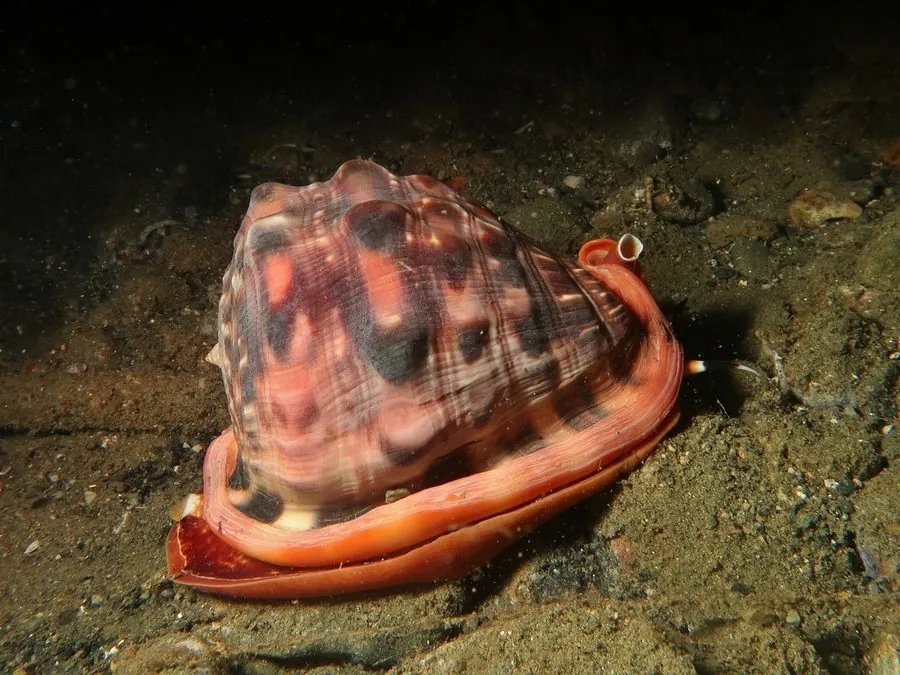

软体动物 · 动物界
万宝螺 Cypraecassis rufa

外壳厚实、唇缘带齿的大型海螺，壳体橙红至褐色，形似倒扣的宝盆，常被当作观赏贝壳和号角收藏。
- 分类
- 门软体动物门纲腹足纲目中腹足目科冠螺科属宝冠螺属
- 栖息环境
- 热带珊瑚礁和岩礁间的沙砾底质，水深数米至数十米
- 地理分布
- 印度洋至西太平洋热带海域，包括印度尼西亚、菲律宾、澳大利亚北部和中国南海
- 保护级别
- 尚无专门评估；过度采捕与珊瑚礁退化使局部种群下降
物种志
万宝螺的贝壳厚重坚实，壳高约十至十五厘米，体螺层膨大，壳面呈橙红、棕褐至暗红色，表面光滑并带有光泽，螺肋不明显。壳口狭长，外唇内侧有一列粗大的白色齿状突起，内唇也生有齿，口盖角质。幼体时壳面有明显的螺肋和褐色斑纹，成体后逐渐被钙质层覆盖而变得光滑。它的外形饱满圆润，常被比作倒扣的元宝，因而得名。
它分布于印度洋至西太平洋的热带海域，包括印度尼西亚、菲律宾、澳大利亚北部和中国南海，栖息在珊瑚礁和岩礁间的沙砾底质，水深数米至数十米，夜间出来活动，捕食海胆、海星和多毛类。它行动缓慢，靠宽大的足部在礁石上爬行。壳形美观、厚实耐用，历史上常被雕刻成工艺品、号角和纽扣，如今也是观赏贝壳市场上的常见种类。过度采捕和珊瑚礁退化使其局部种群下降，目前尚无专门的保护评估。
形态与习性
- 食性捕食海胆、海星和多毛类等底栖动物
- 壳高约十至十五厘米，壳质厚重
- 壳口狭长，外唇内侧具一列粗大白色齿突
- 栖息深度珊瑚礁和岩礁间，水深数米至数十米
- 活动夜间活动，靠宽大的足部在礁石上爬行
- 利用壳可雕刻成工艺品、号角和纽扣
趣味知识
- 万宝螺的壳形饱满圆润，倒过来看像一只金元宝，因此得名万宝螺。
- 它外唇内侧的白色齿像一排小牙齿，是成体区别于幼体的重要特征。
- 厚实的壳体曾被大量雕刻成号角和工艺品，是热带贝类贸易中的常见种类。